Archives : 2009-10
@Slovakia-Bratislava @ Oct 29, 2009
Bratislava是Slovakia的首都，拥有50万居民的Bratislava被称为“多瑙河上的美景”，紧邻匈牙利和奥地利两国边境，位置独特。城市最重要的地标-Bratislava城堡，其次是19位匈牙利君王在此加冕圣史蒂芬王冠的圣马丁大教堂，最著名的是茜茜公主。
我们从Budapest乘汽车到达Bratislava的早晨下着雨，仅仅停留半天时间，更象是路过，或者是去那里用午餐。但我对那儿却留下一些好感和留念，也许是因为一场雨，也许是因为一顿不错的午餐，也许是那儿的朴实？天晓得。这一篇记录比较无聊，好象除了一顿午餐啥也没印象，其实Slovakia的葡萄酒、歌特建筑、它的碉堡城堡以及山脉自然风光还是比较有特点的，只是我们没有在这个点上安排太多时间。
Slovakia国家剧院

Slovakia-偷窥者
这个青铜雕像真的在地面上，那个阴井盖也是雕塑的一部分。他天天趴在地面上面带笑意，其实他是因为偷窥着穿裙子的姑娘而笑，所以被戏称为“偷窥者”。了解到这层解释是不是很晕啊？
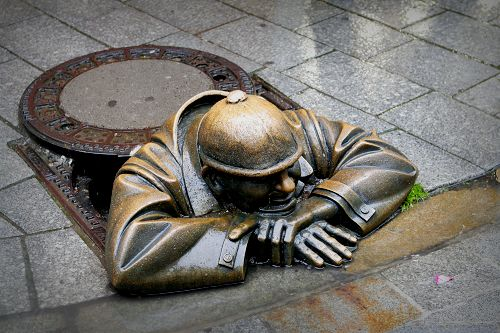
Michalska brana（米懈尔门）内类似指南针的黄铜标记。

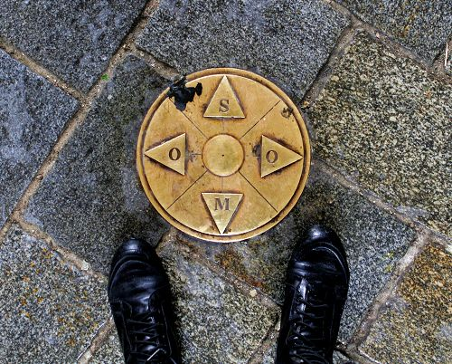

咖啡馆前落了一地黄叶。

麦梗扎的小人纪念品。

室外咖啡座上的女人。
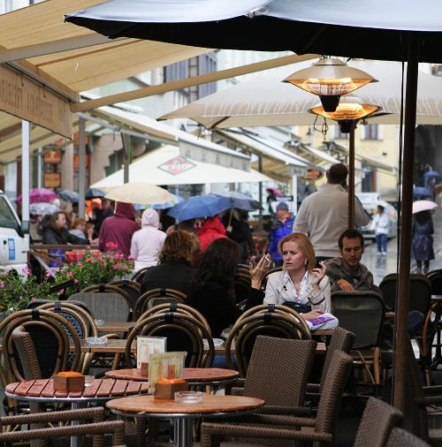
下雨天这些小摊点还是继续营业。

名为“Roland”的餐厅，我们时间比较宽裕，所以享用了一顿比较丰盛的午餐，有人点了热酒，据说还是有点晕忽忽的效果。

午餐系列


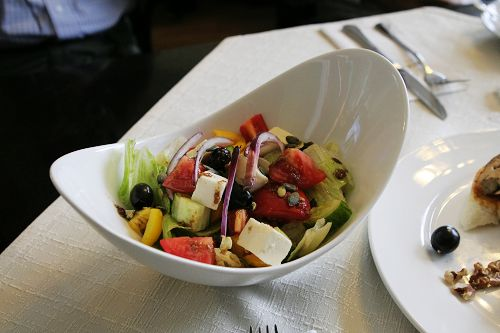

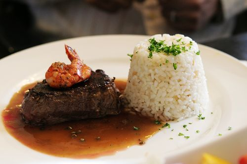
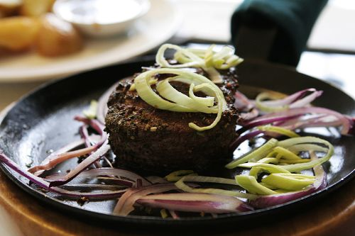
Super doggie！ @ Oct 29, 2009
昨天到今天茶又被“豆瓣9点”的反向链接覆盖了，从开始的3人对茶的推荐到现在的14人，好奇地点进去看这14人的豆瓣，kar推荐的小组话题里有一个标题“欧洲。47国，120 天。11万。明年五月”，天呐，不上班玩4个月？11万人民币？挺奢侈的，如果只是吃住行的话，花不了那么多钱吧？还是被这个计划小小的震撼了。有意向有闲有钱的主儿可以报名参加，希望旅行计划不要那么赶就好。以及“人生就象茶几 上面都是杯具 ”也有意思。
昨晚没更新，因Luke患了肠炎拉肚子，带它去瞧医生，又是打针又是挂水折腾到快10点才到家。上周五晚上接它回家，第二天和一帮朋友开车去外地吃螃蟹，午饭喂它好吃的人多......小家伙忍耐力很强，扎针打针一声不吭，丝毫没有挣扎，我怀疑它是否有痛神经？从宠物医院回来它居然叼着玩具玩起来，一点没有受到影响似的。简直是Super doggie！
ZQ的留言提醒了我，国外对狗的宽容可能是我们大多数中国人无法理解和想象的，在我去的欧洲国家，几乎所有的狗可以和主人一起去用餐，喝咖啡，逛商店，上火车，公共场所常常见到它们可爱的身影，更别说公园了，就连维也纳美泉宫周围的园子也可以见到宠物狗在玩耍，你说咱故宫的园子里可能看到宠物狗吗？南京好一点的草坪都被圈起来，禁止人和狗进入。中国公园是万万不允许带狗进入的，除非是专门为宠物建造的公园，这样的公园大概只有上海有。
Animal Planet频道曾介绍美国凤凰城的动物警察，有期节目讲几只大丹犬幼崽因为环境卫生问题而生病，被人举报，动物警察前来拍照取证，获得合法收养权带走幼崽，并帮助它们康复等待市民收养。比如出车祸、被虐待的、对狗不负责任的主人....等等，会有相应的救助及惩罚，有的甚至还要上法庭。我所看到的国内养犬现状是警察只管收钱打针、罚款和打狗，至于狗狗丢失，被虐待，被谋杀等等一切不利于狗狗的行为，没见警察管过。
住在瑞士乡下时Hans说有个美国人，为了带他的狗一起到欧洲旅行，选择乘船从海上走了4-6天到达Eggiwil，家庭旅馆的相册上应该有这个美国人和他的狗的照片。选择航空也可以托运宠物，但必须与主人分开，被关进笼子放在货舱里，这会不会是主人选择海运到欧洲的原因？
我当然很想很想带着Luke一起去旅行，估计出咱中国海关问题最大，以及要做动植物检验检疫才可能让宠物出国。走一圈下来，就咱中国海关安检最负责，有一次居然让我把靴子脱下来检查。即使这样，在整个旅行期间我的随机行李里都放着打火机，回家才发现，居然没有一处海关的安检机器检查出来，说明什么？说明恐怖活动仍然有机可乘！
回来后见到我的人都说：“哎呀，你瘦了啊！”旅行多辛苦啊，的确瘦了，但咱还可以养回来的嘛。有个家伙说：“旅行记录就一篇啊？”那是你笨吧？请找到界面左下角的“Previous”，点击它，界面会翻到前一篇日志，以此类推。考虑到近期图片较多，多篇日志显示在茶的主界面上，回使得页面下载缓慢，设置一页只显示一篇日志，方便茶友。
@苏黎世火车总站
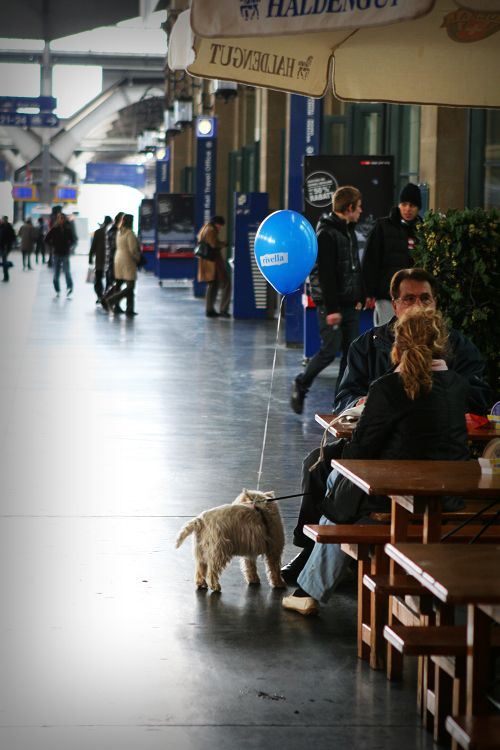

@斯洛伐克

@维也纳主要商业街

@布拉格古城街道
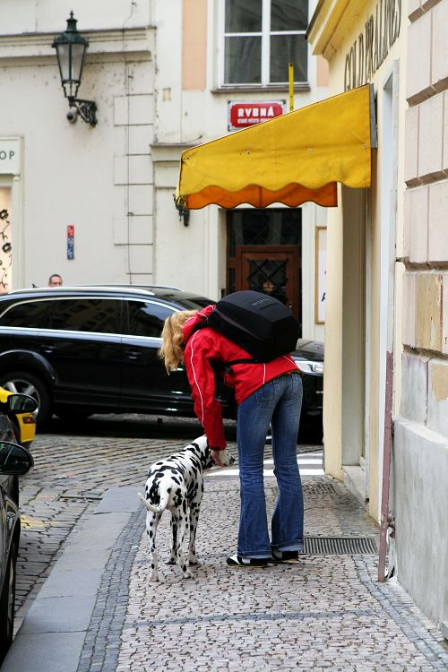
@瑞士的图恩
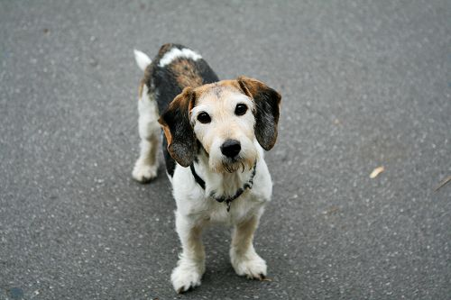
Ruth+Hans旅馆的Sky

@捷克-克鲁姆洛夫
一大早，这只古镇上的英国可卡犬可能刚睡醒，被主人牵在公园坐椅上，主人去办事了，它就坐在那里等。
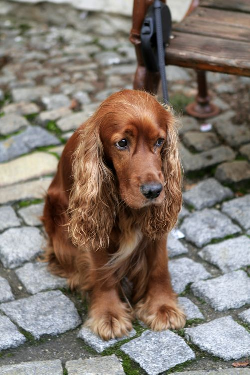
@苏黎世 班赫夫商业街

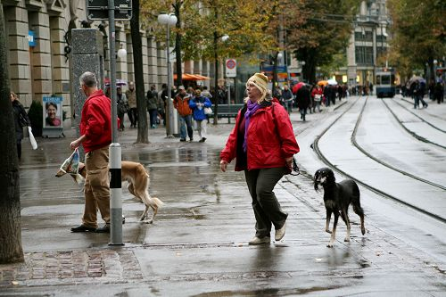
班赫夫商业街的盲人与导盲犬，注意他左脚下面是专供盲人等车设置的盲道。面对镜头的小胖子是有轨电车工作人员，上前来牵引盲人上车并安排好座位。这就是高度文明社会的体现吧？！


@Budapest @ Oct 27, 2009
从香港乘瑞士航空到Zurich机场换乘飞机到具有“中欧巴黎”之称的Budapest，第一程11小时，第二程2小时，我的眼镜左边鼻架脚不幸在航程中被弄断，仅靠右边一只鼻脚架支撑了一天。Budapest比我们预计的要热许多，完全象在夏天，奔波13小时下了飞机是早晨9点多钟，如果我没记错的话，下了飞机就开始逛。浑身肌肉象发酵的面团略有浮肿，挂着一脸疲劳和松弛行走在本应悠闲轻松的旅程中，惊觉Helen皮肤的质感出奇的好，除了遗传基因外，和她每日早睡也有缘故吧？Budapest给我最深的印象是年轻的俊男靓女多，身材比例好，连7、8岁的小朋友身材也象舞蹈演员一样。老年人不多见，也许白天都呆在家里了？
晚上和香港的Esther住一间房，本以为我的行李箱已经很大了，结果她的箱子比我的还要大，不经意瞅见里面装的大多是长衫棉衣长裤，想到这么热的天气不禁哑然失笑。我这人就这么奇怪，形势不利于我的时候我真的会认为有意思而笑起来。
“天气很热，没有带太多短袖啊。”我说道。
“是啊（拖着长长的尾音），怎么搞呢，一件短袖也没有啊。。。。。”Esther拖着长长的香港音调，嗑磕巴巴地寻找她熟悉的普通话词汇回答我。这一晚她并不想和我多聊，后来才了解的确是因为她不适应说普通话才有如此反应。经过几天的相处，对Esther越来越喜欢，下车看到美景，她会不停赞叹“哎呀，太美了，哎呀，多美啊。。。”然后举起相机，在布拉格即将结束的那个下午她相机里的储存卡便用完了，我们俩摄影的疯狂程度不相上下。东欧之行最大的收获应该是结识了这些香港女孩儿。
乘船游览多瑙河，是许多游客在Budapest的首选项目，多瑙河将Buda与pest两个城区分开，这条河上由Margit hid、Szechenyi Lanchid、Erzsebet hid和Szabads hid这几座桥梁承担着两座城的交通，其中最引人瞩目的是Szechenyi Lanchid（锁链桥），建于1839-1849年。

一群好奇的孩子在多瑙河边围观鸽子吃食。
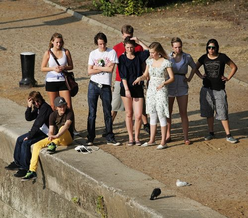
游船驶过新哥特与巴洛克风格相结合的国会大厦，沿多瑙河边而建，历时17年完成。
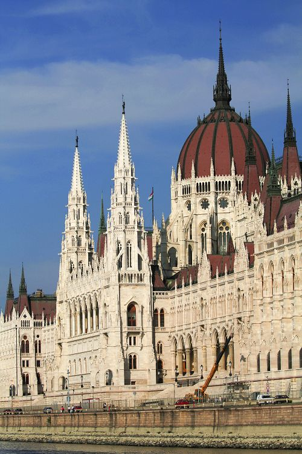
曾在凤凰卫视节目上了解到这些裸体雕像的私处本来是裸露的，受到宗教权势压力后来加上去的遮掩物，比如位于Vaci utca（瓦采街）雕像上的树叶。

匈牙利皇室原先只使用东方和西欧的瓷器，原本只生产粗陶和实验陶瓷制法的小型工厂在1839年Fischer接手之后在他努力下业务扩展及技艺研发非同寻常，以至于使得他们始于1826年创立的Herend成为匈牙利瓷器第一品牌，并被匈牙利皇室及欧洲各国王室所喜爱。

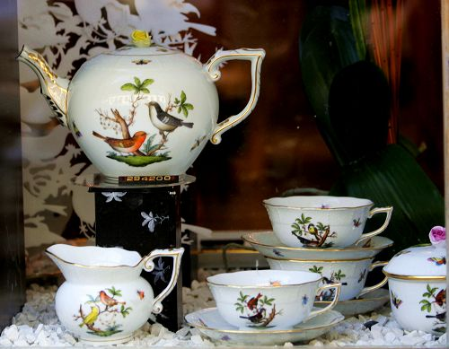
有个人在Budav ri palota（布达皇宫）里傻笑，这个人经过13小时的飞行，身背7公斤的摄影器材，戴着一只鼻架的眼镜，拖着浮肿的身体见到如此辉煌的建筑能不傻笑吗~
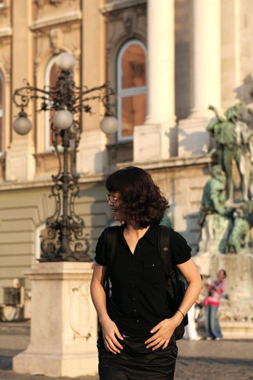
当地人给我的印象不那么拘泥一格、沉闷严肃，装束的色彩较其他欧洲城市丰富艳丽。
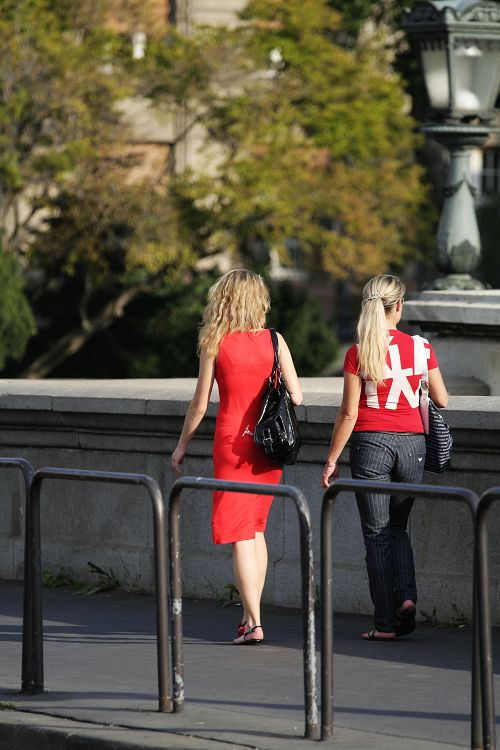
这位皮肤超好的女士轻盈地迈着观光客的脚步行走在多瑙河附近的广场上，周遭俨然是落英缤纷金灿灿的秋色。她手中拿的不是网球，而是一枚翠绿色貌似网球的果实。

香魅啊~
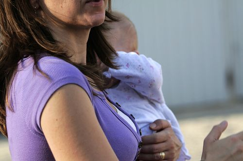
中世纪时渔夫为防御入侵者所建造的碉堡，我只拍了冰山一角。夜晚的渔夫堡最迷人，在灯光衬映下仿佛童话中砂糖城堡或是沙滩上的沙堡。
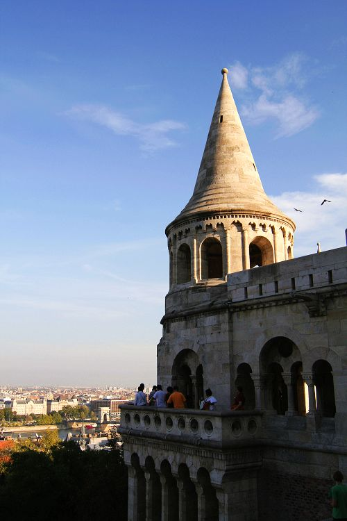
严肃的老妇人，不可思议的脚踝，小宠的舌头一直斜着耷拉在嘴外。
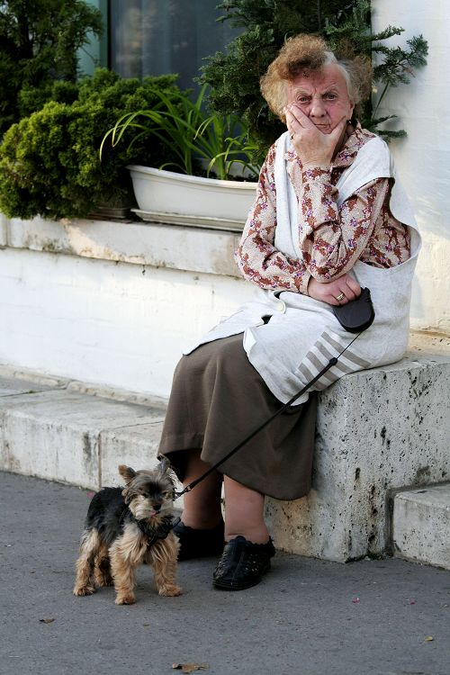
多瑙河边一个人的世界。
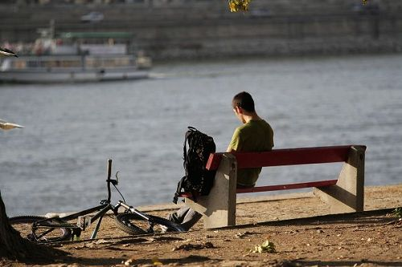
18世纪这里的居民为纪念黑死病的消除在Szentharomsag ter（圣三位一体广场）而建的纪念柱。

Budapest的电车具有浓浓的东欧风味，主要行驶于市区多瑙河两岸和主要道路。
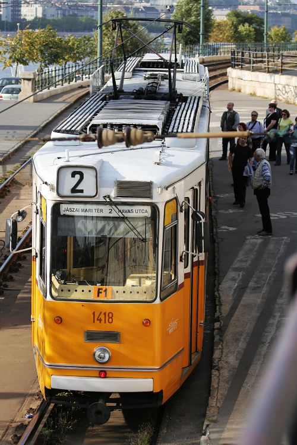
粉红色小女孩，旁边是深红色母亲，母女俩等公交车的同时把梧桐树的落叶当花一样聚拢在手掌里玩耍。
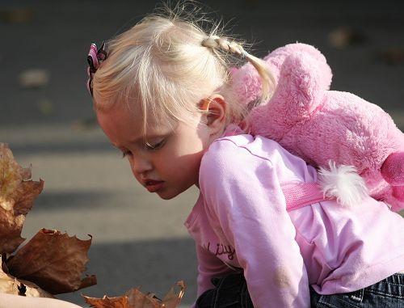
普通居民住宅楼
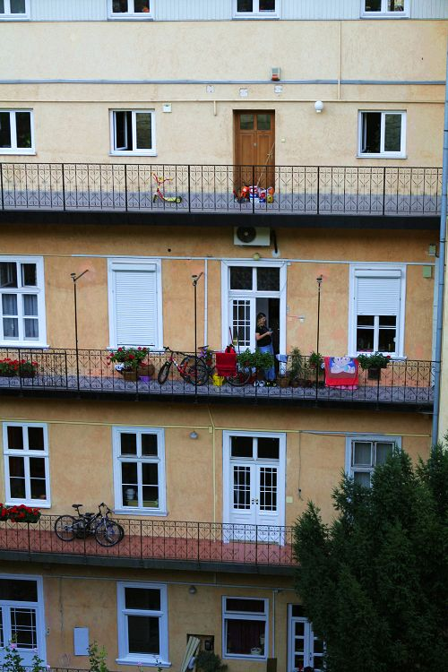
Helen换了一些Budapest货币，我们仨儿在瓦采街的Habana Cafe稍坐休息，喝酒、喝咖啡、喝茶。


宫廷古典布偶。

古灵精怪的玩偶。
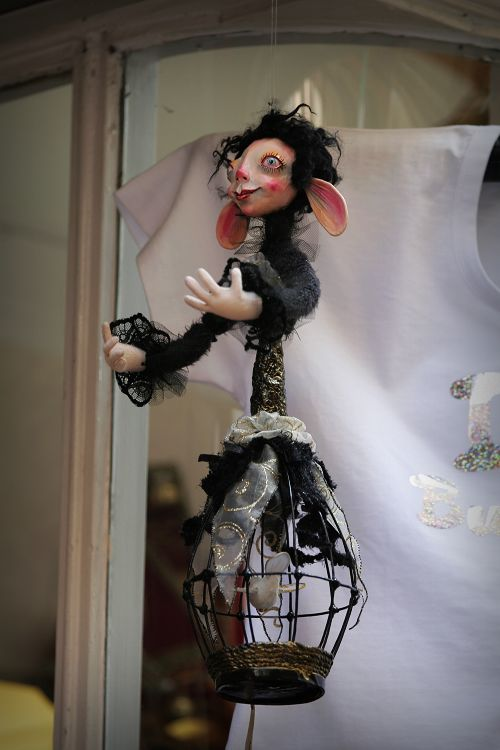
大头先生。
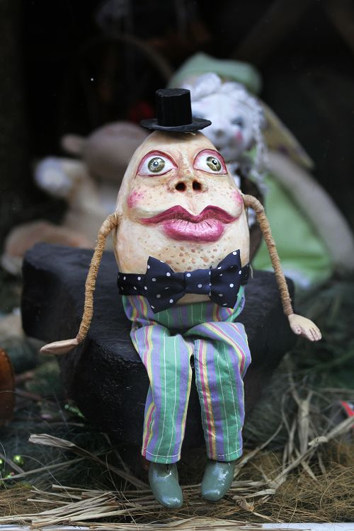
Miranda好奇瓦采街的这家餐馆，询问之后得知建筑有上百年历史，餐馆岁数小。
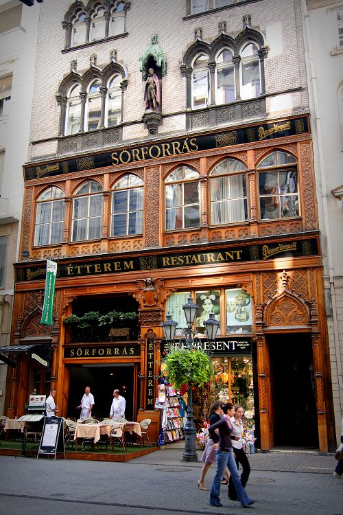
夜晚的Buda城，保存了许多重要的中古遗迹，对岸的Pest城为现代都会，据说Buda是生活区，Pest主要是工作区。北京、香港有直飞Budapest的航班，Budapest有七个火车站，其中只有三个停靠国际线火车，布拉格到此每天仅有一班直通火车，维也纳每天约有七班直达火车。
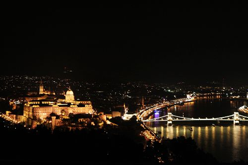
夜晚在Budapest最高点的古堡餐厅里用餐，有当地风情的音乐、舞蹈和歌唱节目的表演。开始大家还聚精会神地看小提琴和风琴表演，到了要小费阶段，再高雅的艺术也沦落到求生的本质上，尤其表演未结束前用餐结束的游客陆续走出餐厅，看得出他们是经过专业训练的艺人。如果象维也纳那场音乐会一样，有专人收钱，专人负责场内秩序，两者性质相同，但经营方式却能维护艺术尊严及表演者的体面。我不爱看这种表演，不是技艺不高，而是作为观众和表演者都会感到尴尬吧。

享受旅行的游客。
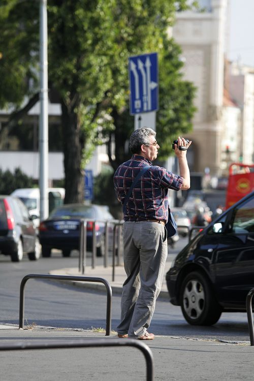
和Helen在Hosok tere（英雄广场），Budapest最赏心悦目的林荫大道尽头处的Hosok tere建造于1896年，为纪念匈牙利建国1000年修建。广场两侧各有一座美术馆，其中包括匈牙利国立美术馆，收藏了不少名家作品。
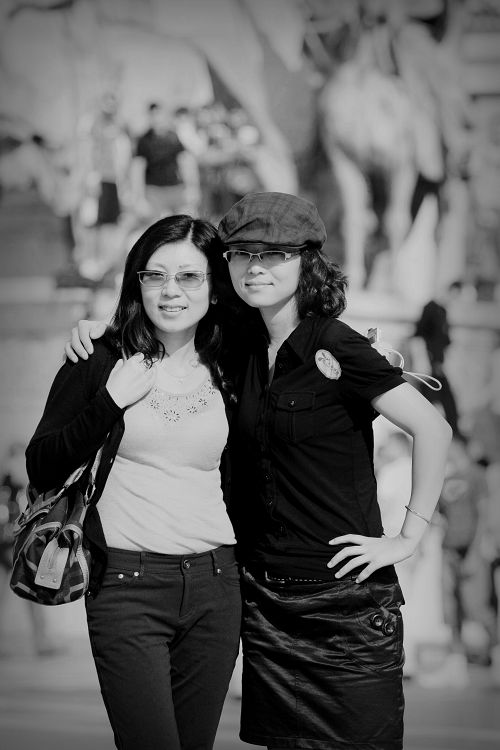
Budav ri palota（布达皇宫）附近的游客。
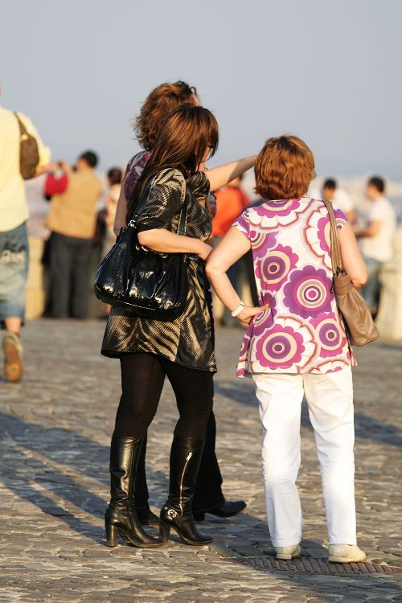

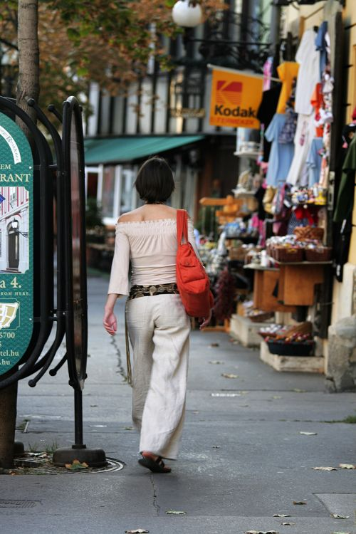
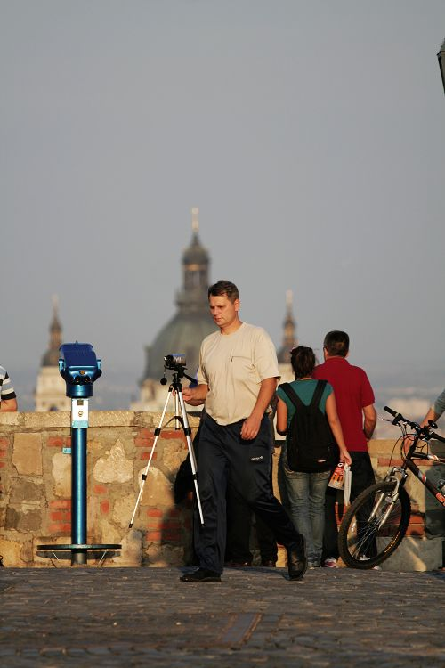
戴黑礼帽的女骑士，拿着苍蝇拍为她的马匹驱赶苍蝇。

Alphorn@Emmental @ Oct 27, 2009
alphorn在香港Yahoo字典里的解释：
n. (瑞士牧人)木製的號角
半路停在好风景处下车拍照；

农户在自家养的奶牛耳朵上做了编号；

号角制作工艺展示；

照片上的古老艺术；
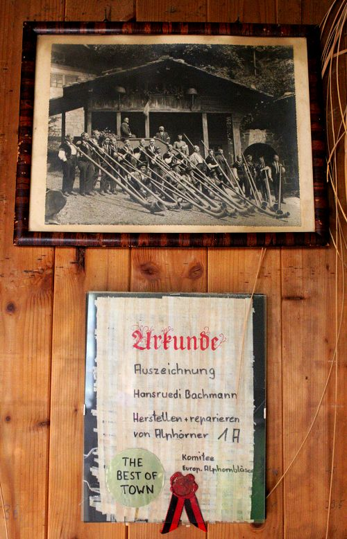
手工作坊印刷的宣传单，TOM拿走厚厚一叠带给他儿子的学校；

作坊里有许多手工制造的工具，从木头的色泽可以看出使用有些年代了，据说是父辈们传下来的工具；
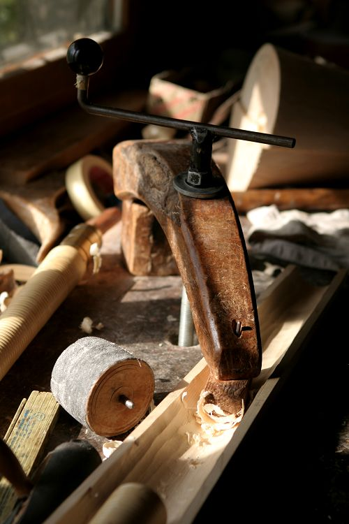
号角不止一个款式，这是其中一款；
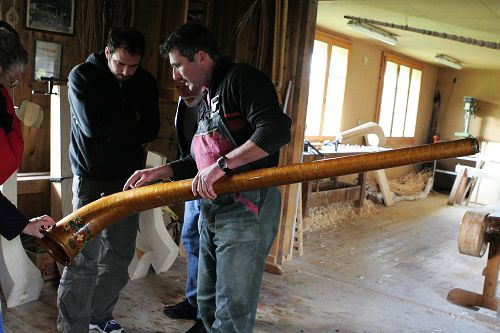
每个人尝试吹号角的样子都差不多，憋得脸红脖子粗的，呵呵，不容易吹出声音哦；

手工艺者讲述号角如何制作的过程，他手上拿着藤条均进口自东南亚；
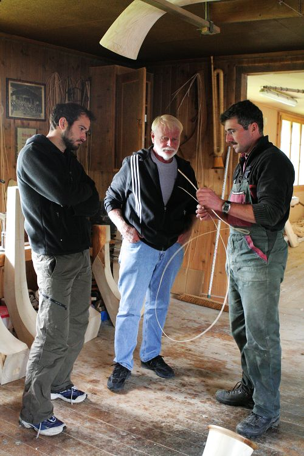
看到房屋上系着的铃铛了吗？那是拴在牛脖子上的，傍晚农户可寻着铃声找回放养的牛。瑞士乡下每年组织奶牛比赛，选出最美的奶牛，也算丰富业余生活吧。

1990年的月历上印着牛和马选美比赛的照片呢：P
注意左边牵马的男人，是这个号角手工艺者吗？

Oct.06@HK @ Oct 27, 2009
光光说的很对，照片尺寸缩小后会损失很多细节，当我翻看这张时，那个晚上的街灯仿佛笼罩着我，栩栩如生的人物流动在画面里，那些女性面部表情生动，叼着烟拖着凉拖或雨靴，对啊，现在很流行雨靴，即使不下雨也有穿，都是时尚惹的祸。我穿着短靴走在香港的街头觉得很闷很热，不知道穿雨靴的MM们是否舒适？亦或象传说中的UGG，即使夏天穿也透气？

印象中香港街头很少看到开怀聊天的人，所以画面中两位妙龄女郎在街头无所顾忌地抽着烟，裂着嘴大笑着聊天，仿佛春雨袭来，挡也不挡不住被吸引了眼球。
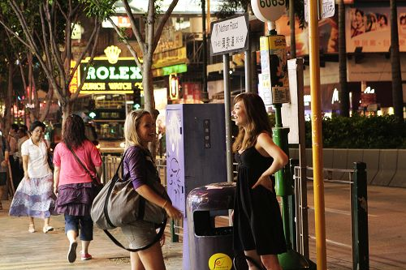
那一抹红让你无法忽视！

上传这张的原因是因为捕捉到画面中的流动与静止，说明瞎猫真的能碰上死耗子。
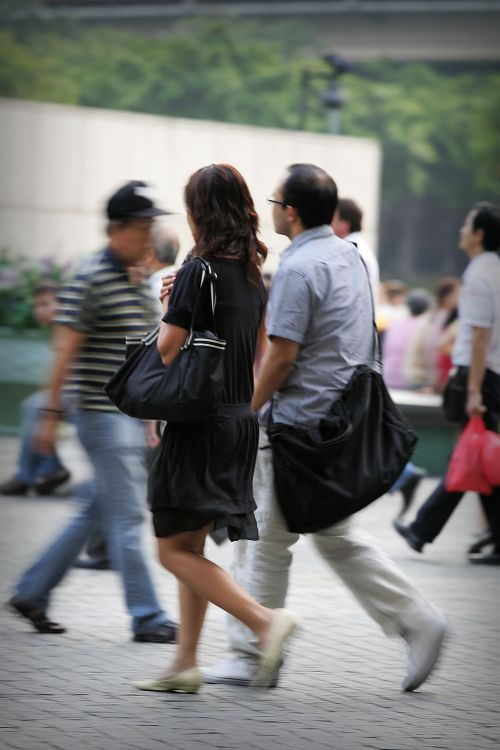
这次去香港在尖沙咀看到许多印度人或巴基斯坦人，象许多欧美人区分不出中、日、韩的人一样我也区分不出究竟谁是印度的谁是巴基斯坦人，有谁能解释香港为什么会有这么多印度人或巴基斯坦人吗？我从Zurich火车总站打车到机场，司机就是巴基斯坦人，在瑞士生活了20年，知道我从中国来马上竖起大拇指称赞中国人心肠好，如何援助他们而不求回报，说巴基斯坦和中国是好兄弟，我一听到“brother"就晕，总之不可避免的想到中东人，想到某些人拍胸脯搂肩膀的相互称兄道弟的情景。
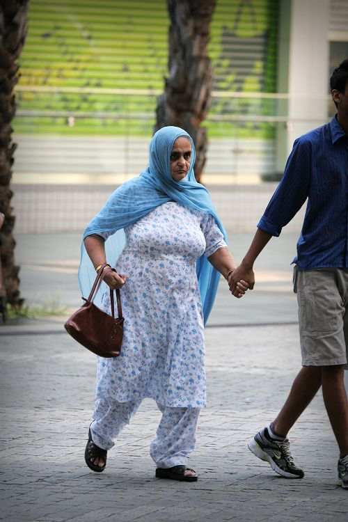
一个学生妹穿着校服穿越繁华夜市，左前方不远处一个打扮甚是妖娆妩媚的中年妇女坐在国际桑拿店门口招揽生意，右边一排身形活跃的市民在等车，下班后的时光总是令人愉快的。

我爱拍创意橱窗。
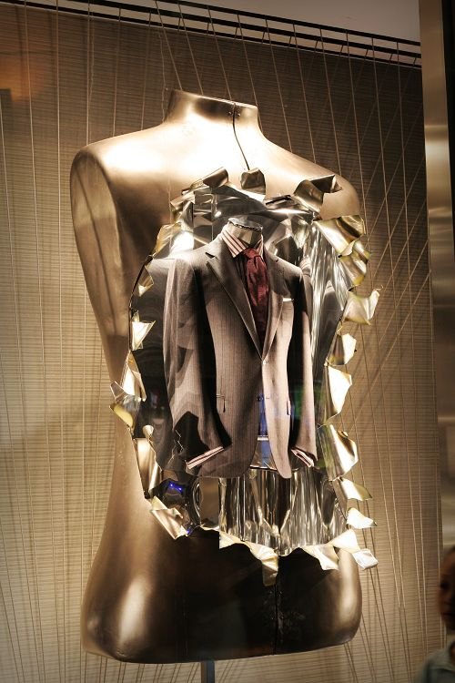
为避开南京海关我选择往返深圳的飞机，这样从欧洲返回带的东西可以避免开箱检查或扣押的风险。南京机场的国际航班少，海关同志们没那么多事就会找事干。曾经亲眼看到海关要求一个小年青为他手上的MP3交税的一幕，小年青很拽地坐在那里与他们理论，多浪费时间啊，成全他们好了，要么就避开这帮孙子。那么深圳往返香港多亏了蔡蔡指点帮忙，感激呐。当我返回香港时，她居然还要请假来陪我，这女人也太有责任感了，飙泪~
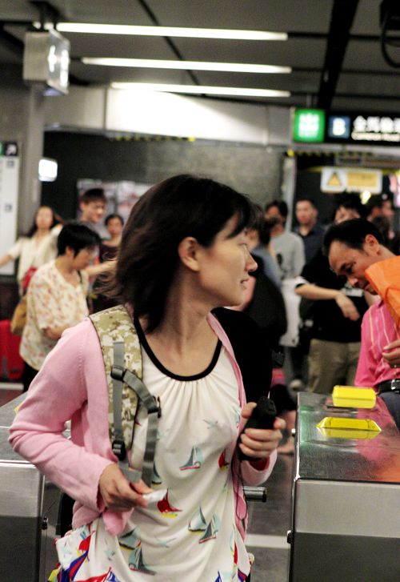
我们俩在广告牌前，香港人的表达在内地人看来的确比较搞笑。
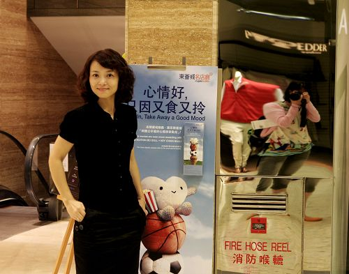
出发前Helen和Miranda挤在一张床上翘脚。

时间尚早，我们三儿准备看场电影，因为时间问题无果，但寻到这张搞笑指示。

不知道内地是否会上映？

总叫俺上片子，瞧瞧Helen举着啥？我琢磨着在她相机里究竟有多少不错的PP？反正她和不爱照相的Miranda在我相机里有许多惊艳之作哦~开始我拍Miranda，她总是低着头或挡着脸，后来在瑞士发现她开始配合我拍照了，这就是成功。以前我姐姐也不爱拍照，后来还特地喊我出来帮她拍。

Bernhard的故事@Eggiwil @ Oct 26, 2009
晚上打开旅行第一站匈牙利的文件夹，翻看之后仍然无从下笔，除了景点照就是留影照，没有半点故事可以写，或许可以写写那里的天气带给我们最初的困扰？还是等下下篇再写吧。
这篇仍然是发生在Eggiwil的故事，在提及Bernhard时Miranda强调我写下“自行车旅行者”，而我认为一个没有家的人是不是称之为“流浪汉”比较贴切？
Miranda和我于10月14日的下午到达Eggiwil汽车站，Hans开车来接我们的同时遇到骑自行车前来的Bernhard。Hans夫妇于一个月前在外吃晚饭以庆祝他们结婚纪念日，那个晚上认识Bernhard，交谈后对他印象不错随即邀请他一起进餐，Ruth说那个夜晚过得很愉快，告别前还邀请Bernhard来他们家里做客。
据说Bernhard以前是在邮局工作，生产钟表的地方是他的家乡，自第二任太太病逝后，对他打击很大，于是骑上自行车开始欧洲旅行，这样的生活持续了七年。因为长久不工作没能按期交保险，他的医疗与养老保险也被停掉。平时他睡在公园或树林里，打些零工挣点小钱，有时会帮森林里的农户做农活，对方允许他居住在森林的小木屋里。听完这些故事，我很好奇这七年的漂泊生活带给他的是什么？以及他从这种饥寒露宿的生活方式中是否寻求到精神抚慰？
Bernhard和我们同一时间到达，住在我们隔壁的客房里，和我们一起吃早餐，午餐和晚餐可能和Hans夫妇一起吃，总之Hans请大家享用奶酪火锅的晚上他也和我们一起。有一次看到他做在沙发上缝自己的裤子，规律的针脚间距，手工活不赖呢。在瑞士的流浪汉也有地方做个人卫生，比如火车站就有提供客人洗澡的地方，只需几个瑞士法郎。所以Bernhard看上去还算干净体面。
Hans在车站看到Bernhard，喜出望外热烈的拥抱他；
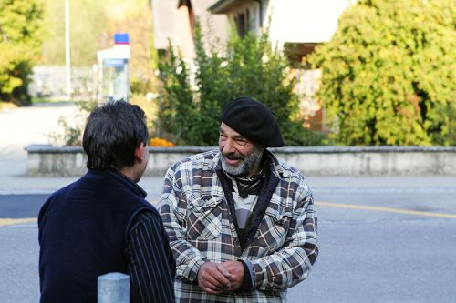
Hans帮他把行李装上汽车，那个大大的行李包里是一只军鼓，并且Bernhard的行李里还有许多乐谱。说到邮局想到我的一个朋友曾经乐呵呵地说到卖给瑞士邮局的工作服如何赚钱的表情，Bernhard穿的裤子是否就是瑞士邮局的工作裤呢？

我们乘汽车先到达旅店，因为道路坡度大，Bernhard推着自行车随后到达。好客的Sky看到Bernhard老远地就迎上去欢迎了。
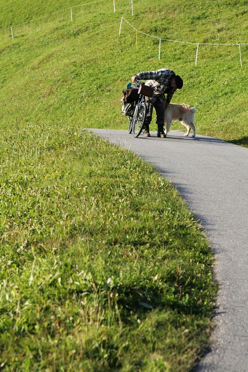
他的眼神里似乎还潜藏着悲伤，他居住在旅店里很自觉主动地找活干，比如帮陈旧的椅子皮带上蜡，扫地，收拾客人用完早餐的餐具，太阳出来他把花草挂上阳台边缘。
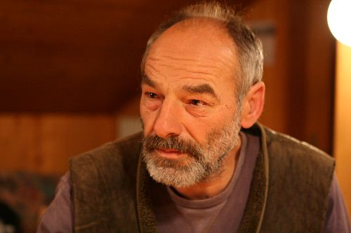
我们邀请Bernhard一起吃葡萄，之后他从口袋里掏出一把新鲜的核桃，用他随身带的瑞士军刀撬开核桃外壳，我尝了一个，的确与干核桃的口味不同。这些核桃可以在树林里拣到，我们在维也纳还拣到过栗子呢。
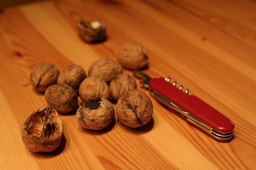
Bernhard在旅馆期间常常收拾清洁他的衣物，他穿着这件长披风拿着他的手杖秀给我们看，多么古老的装束啊~

这张照片是第一个早晨拍摄的，Bernhard在和Miranda聊天，他只会讲德语，所以交流起来得用手势比划，往往也很难理解。希望他能长期在Hans夫妇经营的家庭旅馆住下去，这样也解决了他的生活问题。不知道下次去是否能见到他在那里，或许这一别便是永别？遇到他让我了解不是每个流浪汉都是好逸恶劳，他们有着自己的故事。
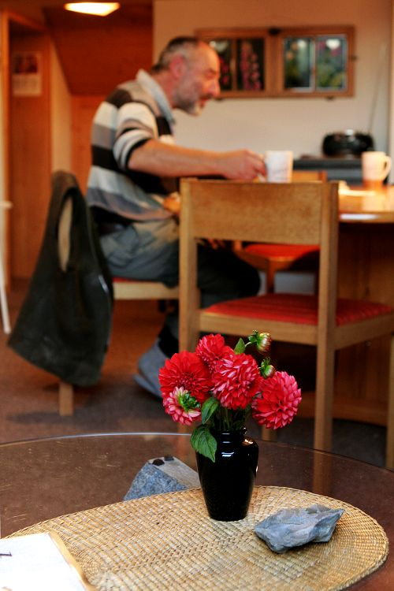
Ruth+Hans Kern@Berghaus Eggiwil （4） @ Oct 26, 2009
奶酪火锅用的奶酪品牌；
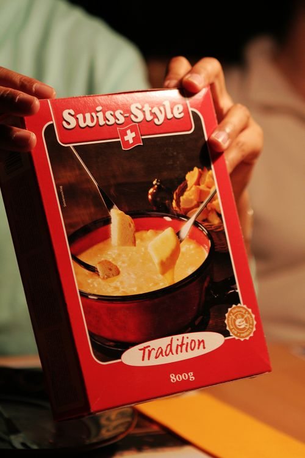
奶酪放入锅里，边加热边用勺子在里面绕8字，一直到奶酪融化为液态状，说实话我觉得有点咸，或者不完全是咸的味道，好象还有酒的味道。但是看他们当地人吃的很享受的样子，连锅底都用面包块擦得干干净净；
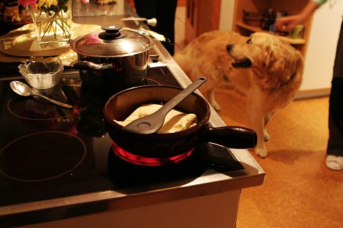
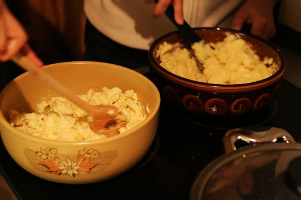
吃火锅用的餐叉，用它叉着面包块、水果块放进融化的奶酪里沾一下吃。上面一截是木头的；
仔细观察，主人家永远用矮点儿的酒杯盛白葡萄酒，用小口大肚个头儿高的盛红葡萄酒。端酒杯的方式也有讲究，如果用手掌托住酒杯的肚子，手上的热量会影响葡萄酒的口味，且在碰杯时声音没有端在杯脚处好听。
男主人Hans，从雨夜在汽车站等我们就可以看出对客人照顾的非常周到。我离开的那个下雪的早晨他开车送我到Langnau火车站，火车就要开了，我买完票冲上车，Hans将拉杆箱迅速地搬上火车，门关上火车缓缓离开车站，我朝着Hans招手，鼻子忽然酸酸的。回来后，心里还惦记着那家旅馆的人与物，回忆着在那里度过的温馨又快乐的时光。
温暖的气氛、温暖的火锅、温暖的眼神。
Ruth+Hans Kern@Berghaus Eggiwil （3） @ Oct 25, 2009
终于可以洗衣服了，一早我们俩拿着各自的脏衣服到一楼的洗衣房，里面有供暖设备、洗衣机和烘干机，以及一些杂物。女主人Ruth在教授我们如何使用洗衣机。
旅馆里用的是山上融化的雪水混合的山泉水聚集在某一个水塔里，当用水量大时，图中的水槽便没有水流出来。如果用水量小，水槽便哗哗地往下滴水；
穿着厚厚外套的Miranda在晾衣服；
洗衣房前的花架上结着大个儿的梨子。
Ruth+Hans Kern@Berghaus Eggiwil （2） @ Oct 25, 2009
小镇上的超市；
这么多水果蔬菜让从东欧过来的人看着眼馋，恨不能马上拿一只西红柿啃一口；

葡萄每公斤售价是2.95瑞士法郎，瑞士去年才加入申根国，货币也接受欧元结算，但是用欧元结算有点贵哦，还是换成瑞士法郎消费比较划算些；

葡萄的编号是49，超市里的每种商品都有相应的编号，购买需要自助，自己拿了葡萄放在秤上称，选择上面的编号，价格就出来了；

Miranda是烹饪能手，做起西式菜驾轻就熟，并且她非常会照顾人以及照顾别人的情绪，女性中如此能干又智慧的不多见！这是供客人使用的小厨房，餐具、调料样样俱全，看上去比自家的餐具还干净；

这是我们自己做的晚饭，简单又营养；

邀请Tom和Jean加入我们的晚餐，他们带回黄豆鸭肉罐头加热，口味和中国菜基本没区别。老俩口对这道菜的好感缘于以前他们在法国朋友家品尝后留下的印象。
我们老少四人吃得欢畅，Hans夫妇以及楼上一家三口瑞士人也陆续加入。Hans又奉上红白葡萄酒供大家畅饮。这一餐之后我便独自将起程去Zurich了。
Ruth+Hans Kern@Berghaus Eggiwil （1） @ Oct 25, 2009
在整个旅行中Eggiwil给我留下既深刻又美好的印象，旅行途中更新比较困难的缘故一直没有回答少爷Eggiwil家庭旅馆的信息，这家旅馆分不同房间，房价会有所不同。旅馆提供免费早餐、免费上网，楼下有洗衣房（可能需要支付一点点费用），请拿哪条浴巾就一直用哪条浴巾，晚上十点半之后不要洗澡或使用吹风机，不提供牙刷、拖鞋。询问过当地人是否常常见到中国游客，回答是今年只见过两次。可能中国人出国旅游都忙着跑景点吧，象我们在瑞士之前的行程一般！据说上一次是上海的游客，让主人家头疼的是上海游客用电脑在旅馆里看在线电影。。。。很晕。。。。以至于网速变得很慢很慢，影响了别的客人使用。这让我想到中国人在旅行途中聚集在一起打扑克的情形，真的很不能理解这些旅行中的行为。
*********Ruth+Hans Kern*********
Website：www.berghaus-eggiwil.ch
Tel:++41/+34/491 2368
Fax:++41/+34/491 2375
E-MAIL:berghaus@eggiwil.cn
这是Ruth+Hans家庭旅馆的整个建筑的照片；
无论客人还是主人都会先到达旅馆后门，客人从左侧门进房间，而正对我们的门一般是主人进出，客人出门也从这个门走。为什么这样呢？客人和主人居住在同一座建筑里，主人也需要私人空间，所以相互尊重彼此的私人空间比较好；
人间仙境~
旅馆的庭院，有小花园，从这里可以远眺的风景更美；
住宿费里包含一顿免费早餐，每天早晨都有酸奶，是主人带着瓶子到山下小镇上打回来的。还有他们自己酿制的果酱。
右下角的瑞士奶酪是口味较重的一种。我在瑞士航空飞机上吃了很多这样的奶酪，吃到腻吃到只要一乘坐交通工具就想吐。
旅馆主人自己种植的水果，苹果树就种植在庭院里，以及奶酪火锅吃的梨子也是自家种植的果实。
到家了。 @ Oct 24, 2009
昨晚飞机晚点一小时起飞，南航空姐态度让人怀疑自己上的是公共汽车而不是飞机。我的座位很不幸与在一个有口臭的男人相邻，由此我的脑海里浮现出那些在电梯间、地铁以及狭小公共空间里遇到口臭人士。强忍了将近两小时，不时用手指捏住鼻子，并在心里为对方假设一个可以不让自己开口说“不好意思...”的理由。事实上谁也不忍心向对方说出“不好意思，请闭上你的嘴巴”这种话，但我可能会说“不好意思，你能不能喝点水或吃颗糖？”这位先生整个航程中都在看报纸和杂志，时常打个哈欠，或是呼口气，天呐。。。。。。中国男人为什么可以对此毫无顾忌？就象许多毫无礼貌冲进他人私人空间的人，其实我觉得中国人活得挺自在的，可以把公共场合当成在自己家一样大呼小叫，即使身上的行李N次冲撞到别人也不会见外地说声抱歉。更匪夷所思的是上飞机要抢，下飞机也要抢，提取行李一大堆人围挤在行李出口处，一大圈地方可以提行李，等待一分钟会死吗？有时觉得西方人对中国人的鄙视也不无原因，而我们的反驳不过是虚弱的自尊心驱使罢了。
今天九点多钟出发去高淳吃螃蟹，开到一条大河岸边，河水里一溜排停靠着农家的渔船，上船吃螃蟹的感觉好不好？那当然是好了，鱼虾新鲜，蔬菜也好吃，螃蟹肥美，带了Luke去，久别了的它见到我的一刹那异常激动，贴着我发嗲好久啊。在欧洲拍了许多狗狗，养狗也有潮流，每个城市相对养得狗狗类型会不太一样，看到狗狗就会想Luke。终于回到南京，平时熟悉到麻木的生活此时让我感到无比幸福，那些曾经被厌恶的蔬菜，吃着父母做的家常菜，在小区里散步，看着熟悉的街景，以及下飞机后迫不及待开上自己的车，哇，那种推背感简直让人幸福得摇头。要知道过去的18天里，两条腿是我的主要交通工具啊，好象把几年的路都走完了。
晚上下载了几千张照片，几千张。。。需要时间慢慢观赏慢慢处理，以免怠慢了自己两条腿，一副肩膀及当时的一双眼睛。
明天返宁 @ Oct 22, 2009
在港过了近一周昼伏夜出的日子，今天终于背上相机出去走走拍拍，就好象吃了一圈大餐，到港再也吃不下了。既使如此还是采购不少，同品牌商品价格便宜30%，之后汇率上又打了个8.8折，告诫自己为了贪便宜买回的东西其实是最大的浪费。不得已今天购回箱子一只，外出拎最大的箱子也没用，航空公司限重的情况下，超重的箱子肯定过不了关。分成两个箱子请行李少的帮忙托运，如不行就试试随身带上飞机。一大一小两个箱子外加一个摄影包，我这小身板要经历最严峻的考验了！
另，回答茶友的问题，手表在瑞士比在香港买便宜10-15%。建议在苏黎世机场买，省去自己办退税的麻烦。CASH REFOUND柜台压根找不到人，问询处回答你“不知道”，当然也可以回国邮寄。
倒时差。 @ Oct 21, 2009
看电视到早晨5:30还是毫无睡意，住在外交部驻港公署的接待处，这儿居然能收到六十二个电视台的节目，还有江苏卫视哦。下午去铜锣湾吃了午餐，一个人吃了一碗上汤菜心，要知道平时我可是食肉者，在欧洲期间特别渴望水果蔬菜，既使如此我还是很耐旱的骆驼，女伴儿每天可是水不离手的。
透过餐厅的玻璃边吃叉烧饭边看着下班的人群，看到那些精致的女人真是舒服，还是国内好啊，想想在苏黎世上个厕所要14块，喝杯茶要50左右，不蓄杯且还是茶包茶，快餐店喝杯可乐要20几块，出租车起步价120多块，每公里跳24.5…蔬菜水果没咱们的好吃，富裕的瑞士也有乞丐穷人，本以为捷克、匈牙利要警惕包包，却在奥地利遭遇小偷…生活的大环境固然重要，但并不能保证你身在其中就一定满足。欧洲古建筑看多了也会腻，会有审美疲劳，到后来在苏黎世摄影的疯狂程度也会有所降低，印象深刻的画面不是建筑街景古迹，而是那段旅程中亲历的故事和故事里的人，有些大概也只有当时和你在一起的人才能体会它的难忘之处！所以旅行不仅仅是在景点踩一脚就走，一定一定要尽可能的深入民间，一个地方一次不够就多去几次，比如瑞士的乡下！
回到祖国！ @ Oct 20, 2009
停留苏黎世两天于19日22:45分飞离瑞士11小时后，19日下午16:40到香港，现在是20号凌晨2:53，怎么也睡不着。这个时间是瑞士晚上九点，相当于我刚才睡了个下午觉？到了香港感觉脚终于落地了，出来十四天，离家时间太长，归心似箭呐！
离开Eggiwil的早晨下雪，到了Zurich雨加冰雹，第二天放晴。这会儿身处20多度的天气，三天时间经历着“一半是海水一半是火焰”的滋味。回到祖国，真好啊！本周末的机票回南京，如改签顺利的话或能提前回家呢？
@Thun @ Oct 17, 2009
在Hans推荐下我们今天前往THUN湖游览，一早Hans开车顺便带我们到达Signau火车站，很小的站台只提供自动售票，好在有Hans帮忙操作，购买了两张往返的火车票，中间换乘一次火车到达Thun，游船的售票点就在火车站边上，买的是一天使用的票，一等舱为40瑞士法郎，可以在一天内反复乘坐游船，一路上停靠的码头都可以下来逛逛，售票点走几步就是码头，很方便。并且每个码头到达的时间都很详细的列在售票点随手可得的旅游册子上。
在船上用完午餐，考虑到时间问题我们决定在Interlaken前两站的St.Beatus-Hohlen下来走走，意外走到一个有名的CAVES，需要走过一段不算远的山路，非常美，旁边能看到湖水及远处的雪山，满地落叶与五彩缤纷的秋色，没有言语能够表达当时身处此景的心情，完完全全从心脏深处溢出来的陶醉与快乐。为了体会更多瑞士的细节，返回时我们俩特地提前一站下船走回总站Thun，用了大约1.5个小时，顺着湖边行走，路过许多居民区，非常美，照片回来上传。
我想提到的是返回Eggiwil的巴士上我们遇到一个非常友善的女孩子Stephie，她主动提出下车后她回家开车送我们会客栈，于是我们多乘了一站路跟她回家取车。要知道当时天全黑了，还下着雨，到了Eggiwil之后需要步行一段山路才能到达，这种情况下对我们来说简直就是雪中送炭。更有意思的是，快到Eggiwil时，几乎全车的人都在提醒我们，把我们俩乐坏了。Stephie每天往返于Eggiwil与Bern之间上下班，需要乘巴士－火车到Luzern-火车Bern，这在我们看来简直不可思议，但这恰恰说明瑞士交通多么发达，换乘交通工具之间几乎只需要走几步路而已，且换乘间隔时间仅5-10分钟。在好心的女孩子送我们回客栈的时候，Hans则在汽车站等着接我们呢。瑞士人民简直太友善，太友善了。
我们乘坐的游船；

码头等船的当地人；
我们在Thun前一站下船行走的路线；
这是瑞士火车上的桌子，上面除了中文似乎什么文字都印了，于是女伴儿用圆珠笔留下这行字；

昨晚客栈主人邀请客人们一起晚餐，有名的瑞士奶酪火锅哦，上桌前搅拌奶酪到融化为止，用面包块及自家摘下的梨块沾着吃，同时还可沾点白兰地酒。主人提供了红白葡萄酒，加上奶酪火锅，这就是瑞士人的大餐了。


聊天是晚餐的主要项目，从各个国家的金融到保险，以及美国人的笑话。比如瑞士政府要求所有旅馆经营者投保一种险，以便客人在这家酒店或旅馆发生问题时赔付。政府特别强调尤其要小心美国人，因为美国人真的很爱打官司，之前还真有一个美国人把律师请到瑞士来和酒店打官司呢。
明天将独自一人前往苏黎世，没有笔记本电脑更新会慢一些喽。
@Emmental @ Oct 16, 2009
美国来的老夫妻俩TOM和JEAN驾车在欧洲旅行四个月了，在此次旅程中已是他们第二次住在RUTH+HANS家庭旅馆，前一次在八月份。并且，他们在两年间就来这家旅馆四次。该地区为德语区，TOM曾为美国空军，在德国工作过五年，住在德国人家里，所以德语还不错，解决了问路的问题。但是瑞士人讲的德语与德国人讲的德语还是有区别，不太好懂。他们开着法国朋友借给他们的标志207，在欧洲大陆上走走停停，旅行期间已跑了1.3万公里。上午两位老人赶往小镇上剪头发，下午邀请我和Miranda去饼干工厂和Alp Horn制作坊。真是太好了 ，首先他们有车，其次他们比较熟悉地形，还曾在此进行过几天的徒步旅行，如果不和他们一起去的话，我们可能需要几天时间才能走遍Emmental地区。
午饭前大家聚在一起弹钢琴、跳舞。图中两位年轻男女刚从LUZERN音乐学院毕业，也在此 度假。每天会弹一小会儿钢琴，唱唱歌。

Alphorn是当地的一种乐器，类似西藏喇嘛教吹奏的那种长长的金属号角，但这个乐器是用木头和藤条为原料，需要花费几年时间才能完成一个成品。木头为当地采伐，木头里的水分要晾几年才能蒸发，否则制作出来的乐器容易变形，乐器外面的藤条则从印尼进口。目前全瑞士仅有二十人继承了这项手工艺，我们下午去的这家祖孙三代都是制作Alphorn的，工作室里有许多爷爷传下来的自制手工具及机械工作，非常有意思。TOM想要订购一只Alphorn，约2、3000美元。听完工作室主人详细的介绍后，去的每个人都得到了使用Alphorn的机会，有的吹出来的是气息声，有的能吹出不连贯的旋律，我则只能吹出毫无音阶的声响，无论吹出什么声音，大家都会给予鼓励与喝彩。
早晨在房子前面和SKY的合影；

Alp Horn及制作手工艺者。
Kambly饼干工厂在更远的山区，绕了好多弯才到，晕死我了。这里有许多U型弯道，很适合飙车，当然技术得一流才不会丧命，因为这里的山道很窄，坡道也多。厉害的JEAN驾驶着手动档车开50公里时速穿梭在Emmental山区里。许多当地人到Kambly购买饼干，价格不是太贵，不同饼干前都有可供客人品尝的样品，吃完再选择，并且这里接受信用卡支付，POS机上会显示瑞士法郎和人民币两种总价，你可以选其中一种货币支付。
Tom&Jean驾驶的全景天窗的标志207，这天窗太适合郊游了。

二楼走道上的读书区；

看到洒落在屋内的阳光，让人想马上推门出去。
早晨起来后发现草坪上有一层白色的霜，天气冷得好像是零下了。女主人Ruth昨晚没有采摘下的鲜花经过一夜的霜冻几乎都冻坏了。我也穿上了秋裤，换了稍微厚点儿的毛衣。室内还是很暖和的，什么是高度发达的文明社会？那就是这里的乡下有全套供暖设备和排水系统，我们使用的水全部来自山上融化的雪水形成的山泉。在这里你完全可以享受到在城市里所有的硬件条件，旅馆还提供免费无线上网。
到瑞士就一个感觉：生活在这里非常幸福。

@Eggiwil @ Oct 15, 2009
和Miranda睡到十点多钟起床，打车前往苏黎世火车站，花费CHF46.6，这比我们两人乘地铁要便宜一些，一个人的地铁票是CHF26.00/人。午饭在火车站的NORDSEE点的快餐，总共花费EUR53.00，欧元与瑞士法郎银行按1：1.48换现金，商店和酒店就会少0.07左右。不过比布拉格旧城广场内的银行好多了，布拉格换钱简直。。。不可思议，这个故事等日后详说。肯定有人说这两大傻冒花53欧元吃了顿快餐，筒子们，这就是瑞士。Miranda后来在火车上买了瓶立顿红茶饮料支付了EUR3.50，小杯可乐一杯的价格是EUR3.3。开始我还习惯性的在脑子里换算成人民币，渐渐就不愿想这事儿了。
俺俩儿乘下午2:04分的火车离开苏黎世，在Luzern转车到Langnau，然后乘汽车到达目的地Eggiwil，家庭旅馆的男主人Hans开车在车站接我们来到Ruth＋Hans旅馆。


我们居住的房子有三百年历史，这家旅馆开了十六年，他们有一只叫Sky的可爱又乖巧的金毛犬，下周即将三岁。这家旅馆非常Popular，来自德国、美国、瑞士的游客很多，或许是我有限的想象力，这里完全。。。完全。。。超出我之前所有的想象，就像一个童话世界，风景如画，湛蓝的天空，阳光灿烂，山坡上整片整片绿油油的草坪，牛羊在草坪上悠闲的享受下午暖阳，这在我的生活里还是第一次体会到人与自然和谐的美好。未到达Eggiwil之前我是计划用两天各做一天的Day trip，去Luzern和Bern转转，看到这里的风景以及这座家庭旅馆的环境，我是哪儿也不想去了。只想在这周围消磨剩下的四天时间。要问当地人瑞士哪里最美，几乎所有人都会说Emmental，所以我们在瑞士选择居住在Emmental的乡下，而不是象之前六天马不停蹄地的跑景点赶路。
在我们住进来之前已经有一对老年美国夫妻Jane和Tom，一对瑞士年轻夫妻，一个美国家庭以及自行车旅行者Bernolt居住在这里，天黑后大家在客厅里见面打招呼，做饭的做饭，上网的上网，聊天的聊天，看书的看书，真感觉在家里一样温馨。我们这座房子里居然有木质的桑拿房，两间卫生间，五间卧室，一个不算小的客厅及一间厨房。房间布置的很好，以后上照片。楼下有很漂亮的花园，我们准备明天在这里干躺着一天。

晚饭在我们下车的不远处的超市购买了西红柿、葡萄、苹果、生菜、酸奶、四根香肠以及六大瓶EVA矿泉水，一共CHF27.75。六大瓶EVA矿泉水CHF8.00，等于10块人民币一大瓶，这在国内肯定买不到这么便宜的EVA。这里水龙头的水开了就能喝，公共场所除非有特殊标志不能饮用的，其余也可直接喝。对了，这次旅行我对一路上用过的自来水的印象很好。另外，一个很严重的失误，当然这个失误还是弥补了，那就是电源转换器，我带的是德标的转换器，到了瑞士不能用，好在Miranda带了万能转换器，谢天谢地，我那相机的电池有救了。
@Zurich @ Oct 14, 2009
从第三世界飞到高度发达的资本主义社会，乘上酒店免费接送的巴士到了酒店约是夜里十点左右，闻听有可供免费使用的洗衣机，放下行李拎着脏衣服便去了，两台洗衣机两台烘干机三副熨烫板及熨斗。洗衣机已在工作，我和Miranda只好等，其中一台停止工作了，Hq不愿去拿里面的衣服，只好我来了。好家伙，裤子袜子胸罩裤衩体恤…啥都搁一块儿洗，陆续拎出来还是滑的湿的，我们犯愁的时候两老美进来了。这台电脑控制的新洗衣机既没甩干也没漂洗…大伙儿研究好一会儿还是没结果，倒是另一台老式洗衣机工作的很顺利。开始的喜出望外被失望代替，我俩放弃了。洗洗睡了，明天开始慢慢旅行。
Praha@Oct.12 @ Oct 13, 2009
现在是布拉格12号的晚上，国内13号的凌晨2:15分。断断续续下了一整天雨，午后出了会儿太阳，我一个人步行在布拉格旧城区内，刚刚送别少爷，又见着阳光，心情格外愉悦。这是一天中美好的部分！和少爷约在火药塔见面，远远看到她身穿乳白色风衣拖着一只小行李箱走过来，还是有些小激动哦！在附近酒店内的咖啡座喝东西聊天，原来她笑的声音如此爽朗，爱狗的人都有一颗温暖的心，一定不会错的！聊了两小时左右，他们夫妻二人乘上去机场的巴士飞回英国。
今天穿着毛衣皮衣和长裤，酒店提供的天气预报明天2－5度，后天有雪。天气冷没关系，下雨却很麻烦。整个下午不停撑伞收伞，运气不好呢。好不容易找到旧犹太公墓，买票的队排得老长，我是没耐心的便转道别处溜达。希望明天别下雨，再去那儿看看。
经过这一路，觉得他们和中国人一样不开心，很严肃，大部分人没有笑脸。菜的口味普遍偏咸，有时连土豆都是咸的，到了东欧中欧才知道国内所谓大口吃肉那真是小菜一碟，这儿以肉食为主，昨晚上的捷克猪肘子，那个大啊，一人一只，那猪皮上立着的不是毛而是猪棕…这得等我回来上照片才能了解啥叫大口吃肉！
@Praha @ Oct 12, 2009
昨天以为已到达布拉格附近，其实只是住在奥地利边境，离布拉格还有180公里，为了今天造访游人必去之地Krumlov，字面意思是“河湾中的浅滩”，小城镇被U型河套区隔成两块儿：城堡区和旧城区。早晨见到喜人的阳光，虽然短暂但对爱摄影的人还是如获至宝。只有在阳光的照耀下建筑与大自然的色彩才能释放出魅力！
越往欧洲的西北面越冷，在匈牙利香港女孩子还在抱怨带错了衣服，发愁夏天一样的温度却没有短袖穿，结果在捷克冻得瑟瑟发抖，的确需要件儿薄棉袄。下小雨时我们三人乘着1932年产的老爷车在古城里兜了圈儿，因此我们也成为这城市的风景，老爷车搞笑部分的详细分解，还需要图文并茂才好。从今晚开始会在布拉格停留两天，困了，我睡觉啦。
@捷克克鲁姆洛夫 @ Oct 11, 2009
晚上到达布拉格南面约180公里的Krumlov附近的酒店住下，一楼有当地人在开party，着盛装的小乐队伴奏，人们欢乐地跳舞喝酒。香港几个女孩子抱着一瓶红酒邀请我们一起到楼下喝酒跳舞，因为晕车反应我还是老实的在房间洗澡休息的好。说到这三个香港女孩儿很有意思，拿的都是加拿大护照在港工作，普通话比较弱，交流起来常常是国语粤语英语一起上。普通话有四个声调，粤语则有十个声调，粤语应该比普通话难学吧？
在维也纳停留的第二天有趣的是乘地铁，如果我没数错，维也纳有四到五条地铁线，地铁站看上去既古老又能让异乡人立刻感受到当地氛围。以及在美泉宫遇到一位孤独的老人，回来再写故事。在第一次到达的陌生国度，时间有限的情况下，走马观花看景点也还是避免不了，只是尽可能走近当地人的生活场所，或是日后再来体会更多细节！
待明晚住进布拉格后，就要与少爷汇合啦，千里迢迢见一面不容易啊！
@维也纳 @ Oct 10, 2009
晚上10点多钟听完一场小型音乐会回到酒店，这一天在美好的心情中即将结束。音乐会在一座有着150年历史的古建筑里进行，如今它还承载着一所音乐学校的经营，它的建筑师同时也是维也纳市政厅的设计者。表演乐团为"Vienna Imperial Orchestra"。让人难忘的还有斯洛伐克的雨以及Roland餐馆里美妙的午餐，那儿出乎意料的城市浓浓的生活气息，虽然仅仅是路过，可能与此前想象的反差，倒令人对那儿有些念想！
没有谁可以影响你的心情，除非你真的在意！这句同时也送给暴露自己如何软弱又愚蠢的留言者。你的行为只是告诉大家你有多不快乐，呵呵～明天又将是满满的行程等着去实现，晚安。
@布达佩斯 @ Oct 09, 2009
香港出发，经过13个半小时的飞行，在苏黎世转机，8号早晨（当地时间）到达匈牙利首都布达佩斯。
到达香港 @ Oct 06, 2009
中午12点整飞香港，2点零5分到达时蔡蔡已经在出口处等候，交谈一段时间后感觉是个亲切又自然的同龄女子，性格温和，大约5、6年前相识于中国茶，而都集中在最近女茶友们纷纷露面，收获季节到了？
我们从深圳机场乘前往皇岗的巴士，CNY60.00/人，到了皇岗口岸过中国边检，海关工作人员反复查看我的护照，并用防伪仪器鉴别，约几分钟后放行。之后花HKD45.00/人从皇岗乘巴士到东荟城过香港海关，将填写好的身体健康卡提供海关并简单回答两个问题直接过关，速度很快。后来仔细想想两个人同行，所有票价可以打车直接到深圳湾口岸过关，或直接打车到皇岗口岸过关。
***据蔡蔡介绍一种过关线路更便宜：深圳机场--乘330巴士--投资大厦下客--打车到皇岗口岸，该线路约CNY40.00左右，但出关进关都在皇岗口岸。
***据巴士司机推荐过关线路较简单：深圳机场--乘小车CNY200.00/人--香港国际机场，该方式可供从港乘国际航班的行程，也不需要下车排队过关。
她定在东涌的NOVOTEL酒店，与一个大型OUTLET及地铁站融合在一座建筑里，是家四星级酒店，CNY1200.00左右/晚，如果花费HKD380.00购买两人早餐，可延迟到第二天下午四点退房。注意东涌的涌在香港念chong(同“冲”音)。当我们从繁华的尖沙咀无目的地闲逛回来，望见不远处的青山以及空旷的绿地，整个身心便立刻放松了，住在这里的不便之处是得在荔景换乘一次地铁之外，所剩都是我们最爱的优点。另外，香港街头穿靴子的MM不少，在真正国际化都市里，穿什么都不会让人少见多怪吧。有意思的是从东涌去尖沙咀的地铁上有位男士好像认识我似地朝我微笑N次，下车前居然抬手朝我做出SAY GOODBAY的手势。。。难道这也是未谋面的茶友吗？
恰好酒店有免费上网，用蔡蔡带的笔记本上来写两句，只是无法上传傍晚拍摄的照片。深圳居民到香港很方便，虽然也需要办港澳通行证，但可办一年内多次往返，也就是说一年只需要签注一次。那么周末到香港购物，当天往返，购买世界名品还是到香港买较优惠选择范围相对比较大，香港进口商品应该没有税吧？世界名品有的比欧洲卖的还便宜。晚上逛进LV旗舰店，装修风格与南京德基一样，里面人潮涌动，一听口音大部分是上海人。。。这三个点点点有些许无奈，无论往年电影里演绎的开宝马车的暴发户，还是现如今宝马姐宝马妹的讽刺，到对LV使用者的鄙视，都不是品牌问题，而是社会风气与氛围的问题。渐渐成熟后方才领悟，用昂贵名品融合在个人经济条件及生活环境里，并不是你买了名品就等于你拥有了相同的生活方式，当然有人勒紧裤腰带不吃不喝住大棚骑自行车也要买一只LV，那也是生活方式的一种！晚上品尝了传说中的许留山的甜品，狭长的 店里陆续坐满客人，以及外面买外卖的长队，无不证明这家甜品的名声不是虚传。
洗洗睡了，明晚11：45乘瑞士航空飞苏黎世。
慢慢旅行 @ Oct 06, 2009
剪完手指甲脚指甲已过午夜，花了半天时间收拾好行李，本以为出发前夜能悠闲到入睡，然而事与愿违！人未走，心却赖着，尤其对Luke…真不知道过去的我为何那么向往远方？如今的反差也忒大了，毫无兴奋感，这种愈发恋家的心情真的是年纪大了？
不带笔记本电脑，只穿一双鞋，既使香港三十度咱也穿短靴，伪腔调一把。与只打算穿一件外套出行的H相比，人家才是真正有腔调的主儿！今早晨用了两小时翻有关瑞士的书，渐有把握，旅行还是慢点好，蜻蜓点水式的游览和拍到此一游照气息相像，谁问起来都可以大声说：“我周游了全世界！”果真如此，在家看看碟片也可周游一番呢。在提倡慢生活的同时，是不是旅行也可以尽可能慢一点细一些？！废话说完，就此告别了。
中秋．夜 @ Oct 04, 2009
中秋节和父母呆了一天，他们下车后，从侧视镜看到老妈雄赳赳气昂昂的走在前面，老爸驼着背缓慢地跟在后面，两个人一前一后走过斑马线，我的内心有说不出的滋味，他们真的老了，虽然老妈精力充沛，但还是老了。。。老爸说：“以前过年过节都是我们准备饭菜，现在我们年纪大了，以后由你们儿女准备饭菜吧！”
中秋还没到，小区前后左右就有人开始放烟花，那些天女散花的烟花屑散落在附近的汽车上，未燃尽的火药对漆面会有腐蚀性，可是有谁会去阻止别人想要快乐的愿望呢？倒是LUKE不遗余力地朝着无颜六色的天空狂吠不止，一解我心头怨气。
除了捣鼓镜头外，到现在还没收拾行李。考虑到以前总是将箱子塞得要吐出来的状况，这次准备了最大的箱子，富余空间以备所需，事实上我的采购计划里除了手表和鞋没其它东西了。看着硕大的摄影包和行李箱，这次旅行不会轻松吧？
月饼越做越稀奇，冰淇淋也上月饼菜了。
中秋的傍晚，太阳的余辉洒落在建筑物上。
夜晚拍摄总能轻易就表现出“感觉”这个伪文艺。
静谧的城市这一角，对应着城市那边的霓虹。
镜头新成员 @ Oct 02, 2009

话说上次用“爱死小小白”拍下的那组照片是借邻居的镜头，虽然邻居MM很热情的说“你可以拿去用，用完再还我”，一段时间内我也这么打算，然而临近出发心里总觉得欠人家好大一个人情，还是属于自己的东西用起来舒坦，为什么不拥有一只属于自己的“爱死小小白”呢？现在购进的每一只镜头都在为迎接全画幅机身做准备，翻了许多资料和杂志，综合研究下来这只70-200MM F4L IS USM的镜头很适合室外拍摄，它的重量便于携带，以及IS功能更适合频繁手持拍摄的需要。这次购买后的问题是UV镜和镜头盖不紧合，这种问题估计只会发生在我这个马大哈身上，明天还要再跑去更换，真是好事多磨哇。